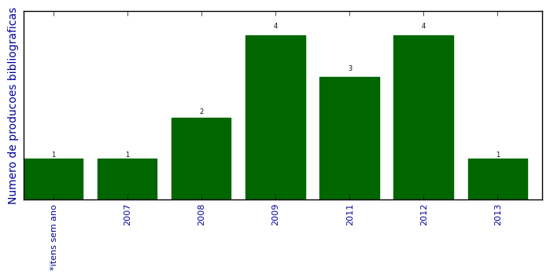

UFSM - Análise do Lattes
Total de produção bibliográfica

Número total de itens: 16
2013
| 1. | FREITAS, Leandro O. ; PEREIRA, R. T. ; PEREIRA, HENRIQUE G.G. ; MARTINI, R. G. ; MOZZAQUATRO, B. A. ; KASPER, JEFERSON ; Librelotto, G.R.. Ontological Representation and an Architecture for Homecare Pervasive Systems. Em: Ricardo Martinho; Rui Rijo; Maria Manuela Cruz-Cunha; João Varajão.. (Org.). Information Systems and Technologies for Enhancing Health and Social Care. 1ed.Hershey. : IGI-Global Disseminator of Knowledge. 2013.p. 215-234. [ citações Google Scholar | citações Microsoft Acadêmico | busca Google ] |
2012
| 1. | FREITAS, Leandro O. ; LIBRELOTTO, GIOVANI RUBERT ; PEREIRA, HENRIQUE G.G. ; KASPER, JEFERSON ; MARTINI, R. G. ; MOZZAQUATRO, B. ; PEREIRA, R. T.. Applying pervasive computing in an architecture for homecare environments. Em: IEEE 9th International Conference on Ubiquitous Computing and Intelligence/IEEE 9th International Conference on Autonomic and Trusted Computing, 2012. [ citações Google Scholar | citações Microsoft Acadêmico | busca Google ] Qualis: A1 (International Conference on Ubiquitous Computing) |
| 2. | FREITAS, Leandro O. ; PEREIRA, R. T. ; PEREIRA, HENRIQUE G.G. ; MARTINI, R. G. ; MOZZAQUATRO, B. ; KASPER, JEFERSON ; Librelotto, G.R.. A Methodology for an Architecture of Pervasive Systems to Homecare Environments. Em: HCIST 2012 - International Conference on Health and Social Care Information Systems and Technologies, 2012. [ citações Google Scholar | citações Microsoft Acadêmico | busca Google ] Qualis: Não identificado (HCIST 2012 - International Conference on Health and Social Care Information Systems and Technologies) |
| 3. | MARTINI, R. G. ; Librelotto, G.R.. Personalização automática de interface para dispositivos móveis em Ambientes Pervasivos. Em: XXXII Congresso da Sociedade Brasileira de Computação - CSBC, 2012. [ citações Google Scholar | citações Microsoft Acadêmico | busca Google ] Qualis: Não identificado (XXXII Congresso da Sociedade Brasileira de Computação - CSBC) |
| 4. | MARTINI, R. G. ; Librelotto, G.R. ; AZEVEDO, R. P. ; FIORIN, A. ; KASPER, JEFERSON ; MOZZAQUATRO, B. ; PEREIRA, R. T.. Uma abordagem para a personalização automática de interfaces de usuário para dispositivos móveis em Ambientes Pervasivos. Em: Conferencia Latinoamericana en Informática, 2012. [ citações Google Scholar | citações Microsoft Acadêmico | busca Google ] Qualis: B4 (Conferencia Latinoamericana de Informática) |
2011
| 1. | FREITAS, Leandro O. ; MOZZAQUATRO, B. ; AZEVEDO, R. P. ; KURTZ, G. C. ; PEREIRA, R. T. ; MARTINI, R. G. ; Librelotto, G.R.. Uma Modelagem Ontológica de Hospitais Pervasivos Aplicada ao OntoHealth. Revista do CCEI. v. 15, p. 277-294, 2011. [ citações Google Scholar | citações Microsoft Acadêmico | busca Google ] Qualis: B5 |
| 2. | Librelotto, G.R. ; FREITAS, Leandro O. ; FIORIN, A. ; MOZZAQUATRO, B. ; PASETTO, L. ; MARTINI, R. G. ; AZEVEDO, R. P. ; PEREIRA, R. T.. OntoHealth: A System to Process Ontologies Applied to Health Pervasive Environment. Em: The 4th International Conference on Ubi-media Computing (U-Media 2011), p. 59-64, 2011.  [ citações Google Scholar | citações Microsoft Acadêmico | busca Google ] Qualis: Não identificado (The 4th International Conference on Ubi-media Computing (U-Media 2011)) |
| 3. | MARTINI, R. G. ; Librelotto, G.R. ; AUGUSTIN, I. ; GASSEN, J. B. ; KURTZ, G. C. ; FREITAS, Leandro O. ; AZEVEDO, R. P.. OntoHealth: an ontology applied to pervasive hospital environments. Em: Maria Manuela Cruz-Cunha; Fernando Moreira. (Org.). Maria Manuela Cruz-Cunha e Fernando Moreira. (Org.). Handbook of Research on Mobility and Computing - Evolving Technologies and Ubiquitous Impacts. 1ed.: Hershey, PA 17033. : Information Science Publishing. 2011.p. 1077-1090. [ citações Google Scholar | citações Microsoft Acadêmico | busca Google ] |
2009
| 1. | AZEVEDO, R. P. ; PEREIRA, R. T. ; MARTINI, R. G. ; KURTZ, G. C. ; NUNES, R. C. ; Librelotto, G.R.. Uma abordagem alternativa para consultar o banco de dados do PubMed. Em: VII SEMINFO - Seminário de Informática RS, 2009. [ citações Google Scholar | citações Microsoft Acadêmico | busca Google ] Qualis: Não identificado (VII SEMINFO - Seminário de Informática RS) |
| 2. | Librelotto, G.R. ; GASSEN, J. B. ; VIZZOTTO, S. ; MARTINI, R. G. ; TURCHETTI, Rogério Corrêa. XSTM Editor - Um Ambiente para Especificação de Regras para a Extração de Topic Maps. Revista do CCEI. v. 13, p. 98-106, 2009. [ citações Google Scholar | citações Microsoft Acadêmico | busca Google ] Qualis: B5 |
| 3. | MARTINI, R. G. ; AZEVEDO, R. P. ; PEREIRA, R. T. ; KURTZ, G. C. ; NUNES, R. C. ; Librelotto, G.R.. Abordagem alternativa para consultar o Banco de Dados do Pubmed. 2009. Apresentação de Trabalho/Seminário |
| 4. | MARTINI, R. G. ; KURTZ, G. C. ; FREITAS, Leandro O. ; GASSEN, J. B. ; Librelotto, G.R.. Um Sistema para o processamento de informações eletrônicas de Pacientes em Hospitais Pervasivos baseados na API do Google Health. Em: VIII Seminário de Informática - Seminfo, 2009. [ citações Google Scholar | citações Microsoft Acadêmico | busca Google ] Qualis: Não identificado (VIII Seminário de Informática - Seminfo) |
2008
| 1. | CRESCENCIO, L. M. ; KURTZ, G. C. ; BORCHARTT, T. B. ; MARTINI, R. G. ; SANTOS, G. S. ; PEIXOTO, G. S. ; BORBA, T. G. ; TURCHETTI, Rogério Corrêa. DRBD - DISTRIBUITED REPLICATED BLOCK DEVICE. 2008. Apresentação de Trabalho/Simpósio |
| 2. | MARTINI, R. G. ; DHEIN, G.. Estudo comparativo entre Adobe Flash e Microsoft Silverlight com implementação de um visualizador para árvores AVL. 2008. Apresentação de Trabalho/Simpósio |
2007
| 1. | MARTINI, R. G. ; KURTZ, G. C. ; MARIN, A.. Sistema de Contabilização de Frequência de Participantes em Eventos. 2007. Apresentação de Trabalho/Simpósio |
*itens sem ano
| 1. | MARTINI, R. G. ; Librelotto, G.R.. Personalização de Interfaces Móveis em Ambientes Pervasivos. 1 ed. 0. . [ citações Google Scholar | citações Microsoft Acadêmico | busca Google ] |
(*) Relatório criado com produções desde 1999 até HOJE
Data de processamento: 04/04/2014 10:46:36